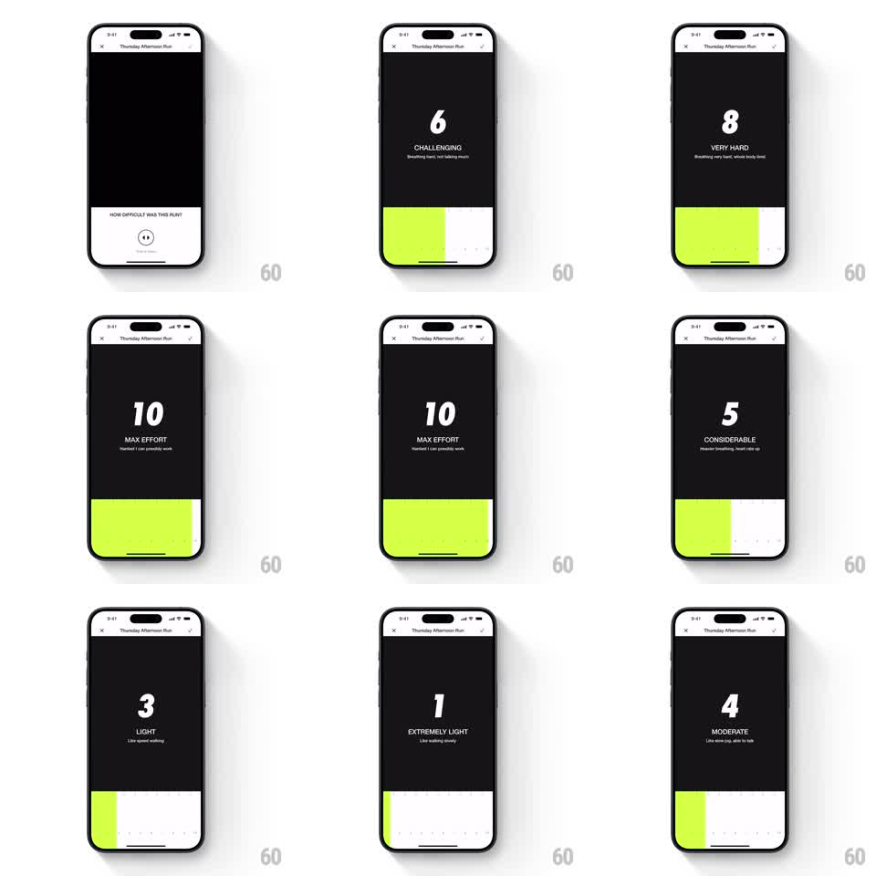

Media
Frame-by-frame

Rebuild this interaction 1:1: Nike Run Club's post-run difficulty slider - scrubbing a bottom slider fills it volt green and drives a giant center number that scales and bounces through 1-10 with matching effort labels.

Rebuild this interaction 1:1: Nike Run Club's post-run difficulty slider - scrubbing a bottom slider fills it volt green and drives a giant center number that scales and bounces through 1-10 with matching effort labels. ## Integration Integration: stack-agnostic spec - springs given as stiffness/damping, timed motions as duration + curve; map every value to your framework and animation library of choice. ## Scene Black full-screen. Top bar: X, run title "Thursday Afternoon Run", confirm check. Center: huge white number with an uppercase label and one-line description under it (1 EXTREMELY LIGHT "Like walking slowly" ... 10 MAX EFFORT "Hardest I can possibly work"). Bottom quarter: the slider - a track of faint tick dots with a volt (#D6FF4B)-filled portion from the left edge up to the current value; a white sheet-peeking intro shows "HOW DIFFICULT WAS THIS RUN?" before the slider takes over. ## Motion spec Pattern: scrub-driven counter slider. - The slider tracks the finger 1:1; the volt fill follows the touch x exactly, no lag. - The number swaps at each integer boundary and pops on change: scale 1.0 to 1.18 and back (spring stiffness ~400, damping ~18, ~250ms) with the label crossfading (120ms). - Fast scrubs compress the pops - if a second boundary hits mid-pop, the spring retargets rather than restarting. - While touching, the number lifts (scale 1.05 constant) and the tick dots under the fill brighten; release settles it back over 200ms. - Confirm (check button) pulses the number once (scale to 1.1, 200ms) as the screen exits. ## Calibration - Fill-to-finger fidelity is non-negotiable; any smoothing on the fill reads as broken. - The number pop is the tactile feedback - it must fire per integer, not per pixel. ## Reduced motion Number changes without the pop (instant swap + 100ms label fade); fill still tracks 1:1. ## Don't miss - Value, label, and description are one atomic unit - they always change together. - The slider is a bottom strip, not a center thumb; the fill grows from the left edge.